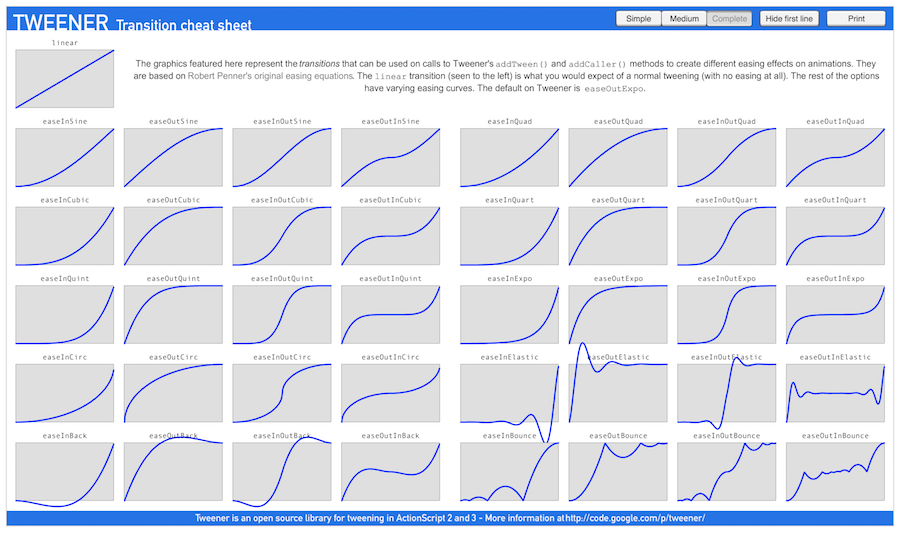

Using the action system in Cocos Creator
Introduction to the action system
The action system that Cocos Creator provides originates from Cocos2d-x with both the API and usage having been inherited. The action system can complete displacement, zoom, rotate and all the other actions of the node within a designated time.
What needs to be noted is that the action system cannot replace the animation system. What the action system provides is an API interface for programmers, while the animation system is designed within the editor. Meanwhile, they serve different usages — the action system is more suitable for making simple deformation and displacement animation while the animation system is much more powerful, you can make animation supporting all kinds of properties with the editor, including motion track and complicated animation in slow motion.
Action system
The action system is easy to use, supporting the following API in cc.Node:
// create a moving action
var action = cc.moveTo(2, 100, 100);
// execute the action
node.runAction(action);
// stop one action
node.stopAction(action);
// stop all actions
node.stopActions();
Developers can also set tags for the actions and control the actions by tag.
// set tag for the action
var ACTION_TAG = 1;
action.setTag(ACTION_TAG);
// get the action by tag
node.getActionByTag(ACTION_TAG);
// stop one action by tag
node.stopActionByTag(ACTION_TAG);
Action categories
Cocos Creator supports various kinds of actions which can be divided into several categories: (Since there are too many action categories, we will not describe every action's usage in detail. The developer can check all the actions according to the action system API list.)
Basic action
Basic action is the action to achieve all kinds of deformation and displacement animation, for example using cc.moveTo to move the node to a certain location; using cc.rotateBy to rotate the node by a certain angle; using cc.scaleTo to zoom in and out on the node.
Basic action can be divided into interval action and free action. Interval action is a gradual change action that is done in a certain time interval. The actions mentioned above are all interval actions which are inherited from cc.ActionInterval. Whereas free actions happen immediately and are all inherited from cc.ActionInstant, for instance, cc.callFunc is used to call the callback function; cc.hide is used to hide the node.
Container action
The container action can organize actions in different ways, below are several of the container action’s usages:
- Sequential action
cc.sequenceSequential action makes a series of child actions run one by one in sequence. For example:// make the node move back and forth var seq = cc.sequence(cc.moveBy(0.5, 200, 0), cc.moveBy(0.5, -200, 0)); node.runAction(seq); - Synchronization action
cc.spawnSynchronization action synchronises the execution of a series of child actions. The result of the execution of these child actions will gather together to alter the properties of the node. For example:// make the node zoom while it moves upwards var spawn = cc.spawn(cc.moveBy(0.5, 0, 50), cc.scaleTo(0.5, 0.8, 1.4)); node.runAction(spawn); - Repetitive action
cc.repeatRepetitive action is used to repeat one action several times. For example:// make the node move back and forth 5 times var seq = cc.repeat( cc.sequence( cc.moveBy(2, 200, 0), cc.moveBy(2, -200, 0) ), 5); node.runAction(seq); - Repeat forever action
cc.repeatForeverAs its name, this action container can make the target action repeat forever until it is stopped manually.// move the node back and forth and keep repeating var seq = cc.repeatForever( cc.sequence( cc.moveBy(2, 200, 0), cc.moveBy(2, -200, 0) )); - Speed action
cc.speedSpeed action can alter the execution rate of the target action to make it quicker or slower.// double the speed of the target action which means the action that took 2 seconds before now can be done in 1 second var action = cc.speed( cc.spawn( cc.moveBy(2, 0, 50), cc.scaleTo(2, 0.8, 1.4) ), 0.5); node.runAction(action);
You can see from the above example, different container types can be combined. Besides, we provide a more convenient link-form API for the container type actions. The action objects support these three API - repeat,repeatForever,speed- which will return to the action object itself and support the continued link-form call. Let's see a more complicated action example:
// a complicated jump animation
this.jumpAction = cc.sequence(
cc.spawn(
cc.scaleTo(0.1, 0.8, 1.2),
cc.moveTo(0.1, 0, 10)
),
cc.spawn(
cc.ScaleTo.create(0.2, 1, 1),
cc.MoveTo.create(0.2, 0, 0)
),
cc.delayTime(0.5),
cc.spawn(
cc.ScaleTo.create(0.1, 1.2, 0.8),
cc.MoveTo.create(0.1, 0, -10)
),
cc.spawn(
cc.ScaleTo.create(0.2, 1, 1),
cc.MoveTo.create(0.2, 0, 0)
)
// play the animation at 1/2 speed and repeat 5 times
).speed(2).repeat(5);
Slow motion
Slow motion cannot exist alone; it always exists to modify a basic action. It can be used to alter the time curve of the basic action to give the action fast in/out, ease in or other more complicated special effects. One thing we need to note is that only interval actions support slow motion:
var aciton = cc.scaleTo(0.5, 2, 2);
action.easing(cc.easeIn(3.0));
The basic slow motion category iscc.ActionEase. You can refer to the picture below for the time curves of different slow motions:

Pictures from http://hosted.zeh.com.br/tweener/docs/en-us/
API reference for specific action
Please refer to the action system API list to learn which action system interfaces can be used.